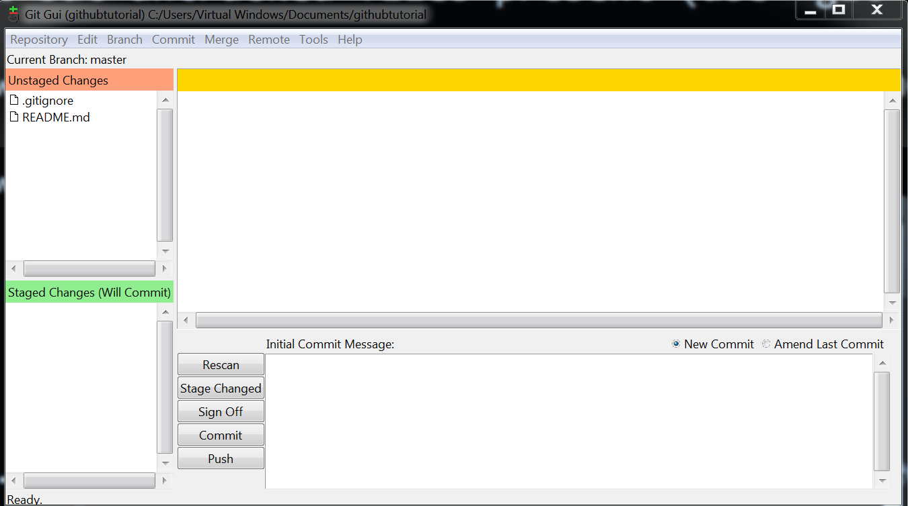

class: center, middle layout: true background-image: url(TNCLogoPrimary_RGB.png) --- # Git and GitHub <br> #### Falk Schuetzenmeister #### GeoDesign Day 3/24/2016 --- ## Agenda 1. Introduction 2. Git 3. GitHub 4. Distributed simulation --- ### Introduction <br> - Git and Github are **not** the same --- <img src="../img/gitlogo.png" style="height:60px;width:auto;"> - a version control system (VCS) that keeps track of changes to a project - a project can be reverted to any (committed) state - git works distributed: collaborators can work on the same project at the same time - git provides tools to consolidate different versions of a project https://git-scm.com/ --- <img src="../img/gitlogo.png" style="height:60px;width:auto;"> <a href="https://github.com/postfalk/django-etl-sync/network"></a> --- <img src="../img/githublogo.png" style="height:70px;width:auto;"> - a cloud implementation of Git Server - a deployment tool - a tool for collaborative software development - a project management tool - a web host - a repository for software distribution https://github.com/ --- <img src="../img/githublogo.png" style="height:70px;width:auto;"> - free personal account allows for 10 open repositories (plus an unlimited number of public *and* secret GIST's) - we have an organization account with private repositories: https://github.com/tnc-ca-geo - there is also https://github.com/orgs/thenatureconservancy/, if you want to know what Dan Maijka is up to (http://thenatureconservancy.github.io) - GitHub allows for unlimited collaborators, in contrast provides free private repos (but limited number of collaborators) --- ### Our Current Situation at TNC <br> - Proprietary Software (e.g. ArcGIS) is harder to support (License management, shared servers, binary file formats) - The consequence, we have to agree on a shared environment since we cannot fully reproduce it - TIS has not approved the use of Git on TNC servers (but you can ship Git repos as zip files) - Working with Git on Windows is somewhat less fun (but that might be subjective) --- #### I hope I can still make the case for the use of Git and GitHub to everyone who write geo-processing scripts. <br> - better collaboration and code sharing - probably someone did already what you wanna do (and it is on GitHub), if not CONTRIBUTE! - you do not need to be a good coder to make contributions (e.g. language in a documentation from a foreign country) - if you ask me for support, I would really like to see your code on Github --- ##<img src="../img/gitlogo.png" style="height:60px;width:auto;"><br>(and GitHub as Upstream Repository) --- ### Getting started: Windows <br> - Website: https://git-scm.com/ - Download Windows Binary - Install it on your system <br><br> ###OSX - In terminal: ```sh brew install git ``` --- ### Our first repo — (git init) - Command line (use cmd, no administrator rights required): ```sh mkdir my_first_project cd my_first_project git init ``` (or use Git bash from right click menu) --- ### GUI: I suggest two changes to your Windows folder view (in general). Go to a folder window → Organize → Folder and Search Options → View: 1. Show hidden files, folders, and drives 2. DISABLE: Hide file extension of known file types In working directory click right click option Git GUI and then choose Create New Repository --- ### Preparing your first commit: Identity <img src="../img/gitgui2.png" style="height:250px;width:auto;"> Edit → Options: Set email address and user name, or ```bat git config --global user.name "[name]" git config --global user.email "[email]" ``` --- ### Preparing your first commit: README.md <br> - add a file README.md to project root - part of the documentation, will be displayed on the GitHub page for project - uses GitHub flavored markdown https://github.com/adam-p/markdown-here/wiki/Markdown-Cheatsheet README.md ```md # This is my first git repo Text goes here ``` --- ### Preparing your first commit: .gitignore <br> - add a file that lists glob patterns for files to be ignored and not tracked by git - e.g. backups, logfiles, binaries, password files, configurations, data .gitignore ```sh *.pyc mysecrets.txt *.bk *.gdb ``` --- ### Where are we? (git status) ```sh Initial commit Untracked files: (use "git add <file>..." to include in what will be committed) .gitignore README.md nothing added to commit but untracked files present (use "git add" to track) ``` --- ### Stage Changes  - only files that changed will show up - use **Stage changed** button to stage for commit --- ### Stage Changes (git add) ```bat git add README.md git add .gitignore ``` or simply ```bat git add * ``` --- ### Finally Commit (git commit) ```bat git commit ``` - Text editor will open, add a commit message: - Commit messages should be short but also describe what changed and identify the version - ideally within 80 characters <br> - commit will be complete when commit message has been saved --- ### Commit options Automatically git add modified files (new files still need to be added) ```bat git commit -a ``` Write commit message directly (careful if your terminal supports history, you might end up commiting incidentally with the same message.) ```bat git commit -m 'Add an awesome feature' ``` Add changes to an existing commit (careful never do this if the commit is already shared with other branches or upstream, only if nobody else has access to this commit) ```bat git commit --amend ``` --- ### Add code --- ### Structure your repository/project - projects can have subfolders in whatever depth you want, however git keeps tracks of files (empty folders will not show up in your repo) - manage files with git commands for a clean git history Delete files/folder: ```bat git rm file git rm -r directory ``` Move files ```bat git mv filename new_filename ``` There is no *git copy* or *git cp* for that matter since the original file stays in place and will be still tracked. --- ### On to Github There are two ways: - If you know you will use GitHub before even starting the project, you can create the basics we just did on GitHub and then clone the resulting repo. - Still create a repo at GitHub. Since we want to add our existing repo, we need to add the remote repo to our local repo ```bat git remote add origin https://github.com/tnc-ca-geo/githubtutorial.git git push -u origin master ``` --- ### Git push <br> ```bat git push master origin ``` ... will push your repo to GitHub --- ### Remarks on Working with Remote Repos <br> - always git pull first ```bat git pull origin master ``` - solve merge conflicts - then push --- ### A collaboration simulation 1. I will be the Maintainer of the Repo. 2. TASK 1: Make README.md better. 3. TASK 2: Write a module that greats all participants. 4. TASK 3: Integrate this module into main.py. 5. TASK 4: Write a test for the Module. <br> The module can be as simple as ```Python def greet(name): return 'hello {}'.format(name) ``` but should be sored in a file in a folder. --- ### A better mergetool <br> Meld: http://meldmerge.org/ ```bat git config --global merge.tool meld git config --global diff.tool meld git config --global mergetool.meld.path "C:\Program Files (x86)\Meld\meld.exe" ```